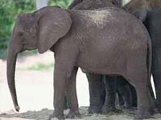

| The Truth About Elephants | ||
|---|---|---|
|
 |
Why is it so easy for them? Are they better parents? Do they just not worry about every little detail? I've never known a gorilla to read and study carefully seventeen books on bringing up baby gorillas. And they seem to know just what to do. They never worry about spoiling their little gorilla babies. They never worry about not having enough time with them. Now, don't get me wrong, I'd rather be human than a gorilla any day. Just imagine having to sit in a zoo. (Did you figure out yet that while gorillas were on my mind, I could only find a picture of an elephant?) | |
| A baby elephant hanging out with its mom, aunts and greataunts, and maybe even its grandmother | ||
| It's hard to tell what goes through a baby elephant's mind when its mom is trying to put it to sleep. Do you think baby elephants wake up in the middle of the night and cry? Do their moms and dads take turns getting up with them to rock them back to sleep? How do you rock an elephant, anyway? And what about gorillas? | Today in the paper there's a story about a new gorilla that was just born in Franklin Park. Its mom is holding on to it just like any proud human mom. And I have to wonder if they go through as much trauma as that human mom when it comes to sleep, and food, and diapers, and running into the street. | |